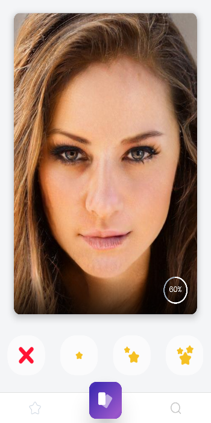
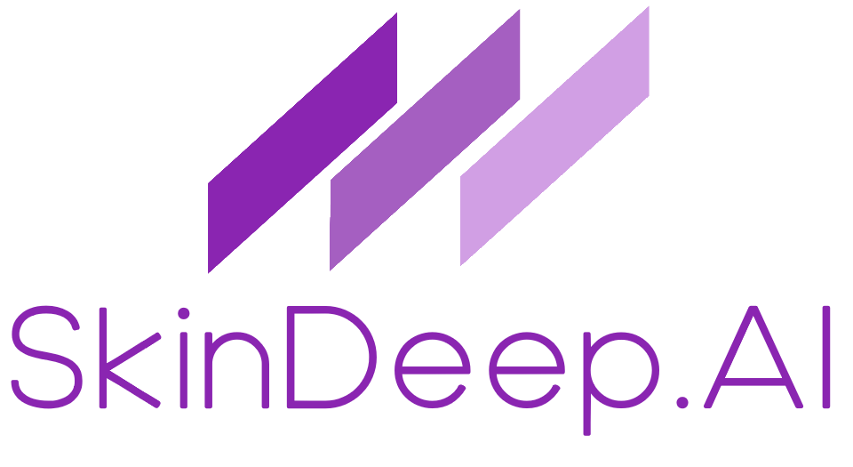

First experiments
Early work on learning individual aesthetic preferences from ratings of generated images, using TensorFlow-era GANs. The core observation lands: the ratings should label the latent vectors, not the images.
The app ships; the patent is filed
SkinDeep.ai launches as a pre-release mobile app — "Perfection is just a few swipes away" — running the full loop against StyleGAN's 512-dimensional latent space. A provisional patent is filed covering the classifier, its inversion, minimal-change transformation, and matching/scoring.
Exploration beyond faces
Research continues into other domains — music, styling, matching — but the surrounding ecosystem isn't ready: faces were the only domain with a good enough public decoder. Active development winds down; the work waits.
Everything open-sourced
The method is written up as a whitepaper and published with the code under MIT, using the working name PLGL — "Preference Learning in Generative Latent Spaces."
This refresh
Plainer words, a live in-browser demo of the actual loop, and a sourced landscape of who has since reinvented which pieces — and what still doesn't exist.
The 2019 app

You rated faces — every one of them generated, none of them real people. The progress ring counted toward the next reveal: every 20th rating, the backend trained your personal classifier, ran it in reverse, and generated your current best match — then you chose to keep going, and it sharpened. The whole system was built and run by one person:
- App NativeScript + Angular, Android and iOS — served faces, captured swipes
- API PHP + MySQL — recorded ratings; past ~20 likes, queued a generation job
- Engine Python + TensorFlow + StyleGAN on GPU — trained the per-user classifier, ran reverse classification, decoded the result to S3
- Model a single dense layer with sigmoid over the 512-D latent (SVM variants were tested too) — small enough to retrain on demand
Design decisions that mattered: training decks balanced by the in-progress model so users didn't drown in duds, generated-only training images so no real person was ever rated, and duplicate screening in latent space.
Original demo videos (2019)
The app, in action
The original walkthrough: swiping, training, and the generated ideal.
Technical deep dive
How the preference learning and reverse classification actually work.
Primary sources
Provisional patent (2019)
The filing, as written: the classifier, its inversion, transformation, matching — and the application list, from dating to DNA.
Read the text →Whitepaper (2025)
The method written up end to end for implementers, from the open-sourcing.
Read it → Markdown →The code, as it was
The original repositories, preserved: engine, mobile app, API server, and the 2019 landing page.
Engine → Mobile → Server → 2019 site →The brand, 2019
The original wordmark, for the record.

Audio overview
A conversational, AI-narrated walkthrough of the whole idea — good for a commute.
About the name
"Beauty is only skin deep" — and the app deliberately modeled nothing deeper. It learned surface judgments because those are the judgments people make in half a second, thousands of times a day, without being able to explain them. The name owns the limitation instead of hiding it. The method itself never cared about faces; that was simply the one domain with a good enough decoder in 2019.